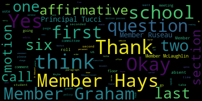
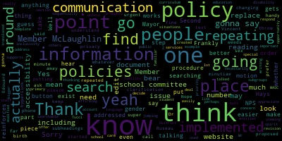
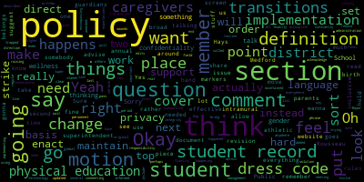

[Lungo-Koehn]: There are links that can be found on the City of Medford website and the school committee website as well. Questions or comments can be submitted during the meeting by emailing medfordsc at medford.k12.ma.us. Those submitting must include the following information, your first and last name, your Medford street address, your question or comment. The meeting is being offered for our first reading, discussion, comments, and public comment per the rules of the school committee for item 2023-25 on the October 16th, 2023 agenda, which is policy ACA-1 non-discrimination on the basis of gender identity. So thank you for all joining us. I'm going to have member Ruseaul call the roll, please.
[SPEAKER_09]: Thank you. Member Graham. Yeah. Member Hays.
[SPEAKER_03]: Here.
[SPEAKER_09]: Member Kreatz. Here. Member McLaughlin.
[McLaughlin]: Here.
[SPEAKER_09]: Member Mescalia is absent. Members present, may I have your name?
[Lungo-Koehn]: Present, six present, one absent. We have a quorum. I know we all, I can just get us started. We have a policy that was at our, submitted for our last school committee meeting. It was page four through seven of our agenda. It can be found obviously in the meeting link through the calendar. And I think we all probably have reviewed it in depth by now. So we just wanted to have that extra time to reread it and digest it, understand it. So I thank the members, Hayes and McLaughlin, Emma Stone for putting this forward and I'll open it up to the floor for any questions that anybody may have.
[63m6ohF-DtU_SPEAKER_07]: or any comments or... Oh, Mira, I just had a couple of quick questions. Yes. Sure. Once I just opened up my page. Yeah. So, okay. So let me just see here. Okay. Oh, wait a second. I have my paper. Sorry, I just have my note. Oh. So on page six in the paragraph, probably like I think the last the top section paragraph, I just had a question about where it says.
[SPEAKER_04]: I'm just going to read it, parents, guardians, and caregivers to develop a transition plan to create some transition. Oh, OK.
[63m6ohF-DtU_SPEAKER_07]: So here it is. Where it says school personnel should speak with the student first before discussing a student's gender, nonconformity, or transgender status with student's parent or guardian. I was just curious about this because where the students are under 18, wouldn't they need the parent guardian to be there, you know, while they're discussing something like that with their child, with the student. So that was a question I had. And I think that might be a question for the superintendent.
[Hays]: I can speak to that too if unless the superintendent wants to go first.
[Edouard-Vincent]: Switching back and forth between the screen, so I apologize. I was on the document.
[63m6ohF-DtU_SPEAKER_07]: No problem.
[Edouard-Vincent]: So I just was going back to read the section that you were saying, Democrats, you said page
[63m6ohF-DtU_SPEAKER_07]: Yes, and the upper. So it's like the paragraph. So, the, I would say in the last paragraph, I'm sorry. It's the first paragraph in on that page, but it's the second section in that first paragraph on the upper top above restroom locker room and changing facilities.
[Edouard-Vincent]: Okay.
[Clerk]: Yeah.
[Lungo-Koehn]: Maybe you want to speak to it, give the superintendent a couple of minutes to find that location.
[Hays]: Sure. So I did actually make a few edits to this, which I am trying to print up now so I can read them. But so I did realize that because I did have some questions about that from some members of the community. When it comes to student records, there are some specific regulations regarding age. And so I realized it wasn't just enough to put C, Massachusetts student records regulations. To be more specific, I am trying to, I could try to share this, but student records by regulation are, if a student is under 14, the parent is the only one who can make changes to a record. Between the ages of 14 and 17, from 14 up to, well, 14 up to 18, because once they're 18, they're an adult, and they can take total control. But between the ages of 14 and 17, a student or a parent can make changes to the record. And then once the student is 18, if they make it clear in writing that they want control of their, they want total control of their record and don't want parents to have control over it, which they have to do in writing, they can't just, it's not just automatic, they have to make it clear, then they would have the right to make any of those changes like gender markers or names.
[63m6ohF-DtU_SPEAKER_07]: So another question that kind of goes along with it was, and I'm trying to see where I put it myself. Oh, okay. somewhere I read, and I didn't highlight it, I should have, but somewhere I read, like, when it comes to, no, I read, sorry, it's my talk, I read somewhere, and I'm sorry, I didn't highlight it, but I read that the school personnel was going to speak with the students, And I was confused like, is the school personnel going to speak with all the students in the class like, I mean, I, I was curious on that because I was thinking that wouldn't the caregivers, or the parents, or all the other students. you know, have to give consent, you know, prior to the meeting, like, you know, just, you know, a notification will go to the parents, you know, we're going to be meeting about this. Do you want your child to be in the meeting? You know, you know, this is what I mean, I guess, like, that came up as a question. So I, it was in here in a mic, and I wish I highlighted it, but you might know where it is, Sharon, where it was in that section. Oh, here it is. The school shall hold a meeting with student and caregiver.
[SPEAKER_04]: of students if they're involved in the process in the case. No, parent of transition supportive of education should speak with the student first for the same reasons school should discuss with the student.
[63m6ohF-DtU_SPEAKER_07]: All right, maybe you could answer that question for me. Like, I'm not really sure. I saw it somewhere, so I wasn't sure if it meant that there was going to be like a class discussion with all the students or did I just misread that?
[Hays]: So I'm not clear, I'd have to see which part you're talking about. I don't think there was anywhere in here that meant to suggest or should have suggested that there would be a classroom meeting. I think in general, Dessie really talks a lot about meetings with the student to talk about how, and the parent if the parent's involved too, about how they want this change to happen or how to make it clear to other adults in the school, other students in the school about this change. Jesse's really trying, I think, leaves things a little open-ended in a lot of places just to really drive home the fact that the point of this is to be supportive of the student. I mean, the title of their webpage for this is Guidance for Massachusetts Public Schools, Creating a Safe and Supportive School Environment. So they're really talking a lot about this being student-driven in the sense that really if a student comes out at school and reveals to an adult at the school that they are transitioning or need to use a different name or that then there would be a process, which that would then be the school end kind of coming up with what their process would be, of meeting with the student talking about how they want this to look in school and how they are comfortable with this being revealed to other people.
[63m6ohF-DtU_SPEAKER_07]: Okay, thank you. And I just had one last question. I didn't have too many. So this is really would be for like the budget in the future, it would have to be like a line item. So on page seven, when requested and when satisfied with the gender identity information provided, schools should amend the student's records, including reissuing a high school diploma and or transcript to reflect the student's current name and gender. So this might be a question for the superintendent, so I don't know what's involved with that, how easily that can be done, and what the cost associated with something like that would be. And of course, if it's possible. I'm sure it is, but it was just a question that was asked of me, and I don't have the answer, so I wanted to bring that up. So it would be some budgetary consideration in the future. And the other question that was asked was, Is, does this would you know because now the students records would be updated reissuing the diploma and or transcript, you know, and, you know, at the same time, there could have been a yearbook, you know what. It doesn't mention anything about a yearbook, so I said that's not mentioned here. But would that mean, because now the name or everything would be different in the yearbook, which might not match up. I know that a lot of times if something I've always kept around for myself is, if you lose your identification, you can use your yearbook as identification with the registry. It's just one of those things where I've kept it around because I know, oh, I can get the yearbook, you know, in case of an emergency, you know, if identification is lost. It's only happened to me once when my pocketbook was stolen and I had to get a new license. But so that was just something I was, you know, it was asked and I don't have the answer. So I'm asking it here. Thanks.
[Edouard-Vincent]: So in response to several of your questions, member Pritz, for students, depending on what grade level the students are at, the principal is deeply involved. I know Mr. Tucci has his hand raised from the middle school level, but at the elementary, middle, and even at the high school level, the parents, families, work closely with school administration, the nursing office, our guidance, our, you know, counseling and behavioral health, Stacey Shulman's department. So we work collaboratively with families at that point in time in terms of if we have students whose names are officially changing, that will go through registration, again, working in collaboration with the principal. that information will be done through the registration office. So in the official database, the child's new name would be recognized, and that's what we would have officially documented. And as the students go through the different levels, when they come to the high school again, member Hays was just sharing what the students can do, but some of that information the district is already aware of. And again, we do have a lot of Councilors available that work with our students and work with families combined also our health services. So our nursing department would be also deeply involved. So it is something where depending on the age, of the student. If it is a younger age student, elementary age, the parents are usually the ones who are expressing that desire and working collaboratively with the principals to let them know this is you know, how I would like my child to be addressed. So there is significant communication with the principals, with school administration, the health services department, and our counseling department, and working collaboratively with registration. So it is something that we've had to deal with, and it's been dealt with appropriately, you know, I would say. I hope I've responded to your question, Member Kreatz.
[63m6ohF-DtU_SPEAKER_07]: Yes, thank you.
[Lungo-Koehn]: Thank you. So Member Hays, I'm going to turn it over to Mr. Tucci, then Member Graham. But just so I'm clear, Member Hays, you wanted to put that guideline on page six in the paragraph pertaining to Cathy's, or Memocrats' first question. So it outlines those, because I think you said you have some changes you want to propose. So are you going to do those all at once? Do we want to screen share that so we're all on the same page?
[Hays]: Well, we can also do it for the second reading. I think, so what I, what I was going to do anywhere where it's student records, so under privacy, confidentiality, and student records, under gender markers and student records, just to add that notation that, and I think, I think what I did in the first, under privacy, confidentiality, and student records is I actually just cut and paste the law itself that explains the age ranges. And then for gender markers and student, on student records, just added a notation that said per regulation, student records regulation 603 CMR 23-01. So that, that would be there for each one of those. So that the, the understanding is that any time a record's going to be changed, there are some more specific, there are specific age ranges when, when the parents are the only ones who can change the record. if it's just a student asking to be called something different, you know, then that's, as long as it's not being a student record change, a student can be allowed to request that if, again, there's, that's under the names and pronouns, that if they're consistently being asked to be called that, if there's consistent identification as a different gender than what they've previously been identified as, that they can, asked to be used, called by a different name, different pronouns, without having to prove anything.
[Lungo-Koehn]: Okay, member, Principal Tucci, thank you, Member Hays. Principal Tucci, then Member Graham.
[Tucci]: Thank you very much. In response to a few of Member Kreatz's questions, I just wanted to provide some context to as well on how I've worked with this. I've always followed DESE regulations when determining which, if any, students or staff should be informed. that a student's gender identity is different from their assigned birth, sex. Decisions are always made in consultation with the student, or in the case of a student 14 years or younger, with the student's parent or caregiver. And to add on to Superintendent Edouard-Vincent's point, the key barometer that we use oftentimes is whether and how much sharing this information will be in the benefit of the student. And DESE does have regulations where they have kind of provide less information where If a student is 14 years young age or younger or older, if they're younger or if they're in ninth grade or above, it does kind of speak a little bit more specifically where if a student is younger than 14 or in grade eight or below, a student has to have a parent kind of part of that decision-making and the parent alone actually has the authority to decide on disclosures and on student record matters too as well. So I just want to provide that context. Thank you.
[Lungo-Koehn]: Very helpful, Principal Tucci, thank you.
[63m6ohF-DtU_SPEAKER_07]: Thank you.
[Lungo-Koehn]: Because I was going to ask the same question where it was 14 or under and then 14 plus, where's that 14 sit? So that definitely cleared that up for me.
[Tucci]: Or the ninth grade or above.
[Lungo-Koehn]: Yeah, eighth grade or below, or ninth grade and above. OK, thank you. Member Graham.
[Graham]: I'm just a point of order, I would like somebody to pull up the policy so that as we're going through this, we can actually look at what we're talking about because as it stands, it sounds like we're all commenting on a policy we haven't seen. Because some changes have been made, and I don't think that's like the. most effective way to get through this policy, but I would rather we take it section by section and field the questions and make live edits as we're going, so that at the end of this, we all know what the policy says, so that its final, its next reading can be its last. But if we're not going to see a copy of this until the next meeting, then it's going to be really hard to accomplish that.
[Hays]: Can I just quickly clarify? I didn't make changes. I did put some edits in based on what people said to me, but with the total understanding that as we discuss it at this meeting, those edits may or may not be part of the final process. I just put in some changes just because people had, you know, things that people had mentioned that I assumed would come up. These are general questions that often come up with this type of a policy, but certainly did not mean to imply that I made changes that were final. So Member Hays, do you have a- I understand, but we still can't see it.
[Edouard-Vincent]: Yeah, so I'm gonna just take it. I was referring, when I was looking at it, I was looking at it in our original agenda. So just give me a minute. I'm gonna throw it into a clean Google Doc. So it'll, I'll try to do pages four, five, six, seven, and I'll pull it up right now. So just give me one moment and I'll pull it up that way.
[Lungo-Koehn]: And Member Hays, do you have- Yeah, you're on mute.
[Hays]: I apologize. I can try to share the one where I've made some additions or, you know, based on some of the things that are, what's been said here, but other people said to me. Let me see if I can.
[Lungo-Koehn]: Thank you. A red line version. So then we can take it one vote at a time to vote on the amendments, potential amendments.
[Hays]: Oh, I'm not able to share it. Let's see.
[Edouard-Vincent]: I don't have a problem. I'll pull it up in a separate doc. I won't have your suggestion. So if you're willing to just say them again, I can do that and start writing in a different color.
[Hays]: OK.
[Edouard-Vincent]: Right. Member Graham?
[Lungo-Koehn]: You're on mute.
[Graham]: Oh, I was just going to wait for the superintendent to bring it up. I have several comments, but I think if we're going to go from the top of the policy, like section by section, I think we should just all hold our comments until we can do that.
[Edouard-Vincent]: I just made it a little larger, so hopefully people can see it on the screen. Thank you, superintendent.
[Lungo-Koehn]: Okay, so the first section, it looks like questions are starting on page six, if you don't mind. We'll go right to... It's actually transitions. the transition section, but I don't see that it's outlined at the same as our agenda.
[Graham]: I have some questions on sections before that we do. Okay, I do.
[Lungo-Koehn]: Okay, there's the beginning member Graham. So why don't you start there?
[Graham]: I have a question about the definitions section. So my My. I would make a motion that we strike this section from the policy because as even it describes like everything, these definitions and terminology evolve constantly and instead put in the policy that the district will maintain a set of definitions in support of this policy on the Medford Public Schools website that is updated on an annual basis so that the responsibility for like the management of that change is happening on a regular and routine basis and is not sort of trapped in policy, because it does change all the time.
[McLaughlin]: Point of information. Member McLaughlin, point of information. Thank you. Sorry, I just had to take an urgent phone call for a minute and step away and I didn't hear, I started to hear a proposed motion and I was just going to ask if that could be repeated, please.
[Graham]: Sure, the motion is to remove the definition section from this document and instead include language that Medford Public Schools will maintain a list of definitions in support of this policy on the district website that's maintained by district personnel on an annual basis.
[McLaughlin]: Second, so that we don't have to keep changing the document.
[Lungo-Koehn]: Um, okay. It's motion has been seconded, so there's no objections. Member Ruseau, if you could call the roll on that First Amendment.
[SPEAKER_08]: Sure. Member Graham? Yes.
[SPEAKER_09]: Member Hays?
[SPEAKER_08]: Yes. Member Kreatz?
[63m6ohF-DtU_SPEAKER_07]: Yes.
[SPEAKER_08]: Member McLaughlin?
[Lungo-Koehn]: Yes.
[SPEAKER_08]: Member Mustone absent. Member Ruseau? Yes. Mayor Longo Kerr?
[Lungo-Koehn]: Yes. Six in the affirmative, one absent. The motion passes.
[Graham]: Mayor, the second motion I have is that everywhere where we say parents, guardians, caregivers, all the policy work we've been doing has been trying to standardize some of the language across our policy base. And we are using the phrase caregivers to be all encompassing. So I would just make a motion that anywhere where we say parents, guardians, caregivers, it just be amended to say caregivers. And that's like, again, a global policy issue.
[Lungo-Koehn]: Motion by Member Graham, seconded by Member McLaughlin. Roll call vote.
[SPEAKER_09]: Member Graham.
[Graham]: Yes.
[SPEAKER_09]: Member Hays.
[Lungo-Koehn]: Yes.
[SPEAKER_08]: Member Kreatz.
[Lungo-Koehn]: Yes.
[SPEAKER_08]: Member Mustone, absent. Member Risseau, yes. Mayor Lungo-Koehn.
[Lungo-Koehn]: Yes. Six in the affirmative. Can I vote yes? Oh, did I skip you? I'm sorry. That's okay. Six in the affirmative, one absent. Motion is approved. Dr. Edouard-Vincent to just maybe note that the, instead of we'll be deleting the definitions and we'll just put in language that the definitions can be found on our website. And then in the rest of the document is where we would change that language to just caregivers throughout the rest of the document. Just notes for, notes to self.
[SPEAKER_08]: Yep, member Ruseau. Just for my, because we're speaking and not seeing words that I'm typing into the minutes, caregivers is caregiver and then open parenthesis S, close parenthesis. We don't want to assume there's more than one, but just wanted everybody to know that's what I wrote in the motion in case there's any disagreement.
[Lungo-Koehn]: Perfect. Thank you. Member Graham, did you have more questions and suggestions?
[Graham]: Not until this point in the policy. So I think the next section says is about transitions. I don't have any comments about transitions, but perhaps others do.
[Lungo-Koehn]: Member Hays, I think in transitions you mentioned also adding that note. Did you want to take that motion now?
[Hays]: For which part? The note that I was talking about in terms of delineating the age, referring to the records, that could go either under names and pronouns, really, or the Privacy, Confidentiality, and Student Records is probably the most fitting place for it, since that's where the age ranges really apply.
[Lungo-Koehn]: Okay, I think because member cards had questions about the second to last sentence in on page six, where it says school personnel should speak with the student first before discussing a student's gender, nonconformity or transgender status with the student's parents or guardian. So I didn't know if we wanted to make that the age requirements clear in that section, too.
[Hays]: So the age requirements only refer to specific changes in the student record. Okay, that's where that that's part of the student records regulations. There's no age range defined by law or by desi in terms of when parents need to be notified if a student just comes to an adult at the school and starts talking about Wanting to change their name or pronouns in usage at school.
[Edouard-Vincent]: Okay. I was trying to find that exact location.
[Graham]: I did share it with all members so that they can... I think it's up higher and there's a section right under the definitions called transitions.
[Edouard-Vincent]: Okay. Right there. And in this section, can you just repeat that?
[Lungo-Koehn]: It's the second big paragraph, Dr. Edouard-Vincent, where it says school personnel, the second to last sentence, school, right there, school personnel should speak with the students first before it. Maybe the principal, Tucci, do you have opinions on this one where, I mean, you're in the middle school, so is it, should it be different between elementary and middle or? to just apply that sense of just being broad.
[Edouard-Vincent]: Or could the comment just be in compliance with the state's regulations so that, or to specifically spell out K through H, or younger than 14 years old, in collaboration with parents?
[Hays]: That's actually, I'm sorry to interrupt. That's actually not in the regulations. There is no regulation about, the regulation specifically refers to student records that the student cannot request. Under the age of 14, a student cannot request a change to their record. That can only be done by a parent before ninth grade or 14, whichever comes first. But in terms of speaking to the parents, Desi actually pretty clearly talks about the fact that some students won't be comfortable, will express that they are not comfortable talking to their parents or actually afraid and leaves it open to the discretion of the professionals at the school to kind of make that call and talk about, work with the student to figure out how to tell the parents. In which actually I did, if I could, I did want to add because I know this is a major concern. We all know this is a major concern for a lot of people that I did want to add in there. If I can, you had asked, I'm sorry, Mr. Tucci, did you want to speak first? I did have something I'd like to add in there, but I won't let you talk first.
[Tucci]: One of the things I was alluding to earlier was the determination of whether or not staff or students should be informed that a student's gender identity is different from their assigned birth sex or anything of that sort. Um, you know, if, if whether or not we want to put any language in about how to make that determination. And one of the things I spoke to earlier was, uh, when making that determination is whether or not it's, uh, the sharing is going to be beneficial to the students. So I just kind of wanted to bring up that point there to see if we wanted to put any language, uh, out there about our stance on it and that for public schools.
[SPEAKER_11]: Thank you.
[Hays]: If I can just, because I've done so much reading about this, just to come in and say, in all cases, Desi keeps coming back when they talk about this to saying, work with the student to determine what they feel is best for them. So I would honestly hesitate to put something in writing in a policy that says either way what staff has to do. because I think really DESE is trying really hard to leave it up to the professionals at the school who clearly, they probably know this student very well. If this is a student coming to them, it feels comfortable enough to talk to them about it, that looking at a process for working with the student to determine how do you want this to look at school for you? all of your teachers to know? Do you want all of your classmates to know? How can we bring your family into this so your family knows if they don't already know? Of course, if the family's the one coming in or if the student's coming with their family, the team of people working on this would be including the family or the caregivers. But there's a lot of open-endedness to DESE's guidelines and really they keep coming back to in their discussion throughout their webpage or their website for this, that it's kind of a student, it needs to be student-driven, that we need to honor what the student feels comfortable with. And so there really needs to be, whether it's a defined process or just a generally known process of how there's a team of people that gets together with the student, maybe including a guidance Councilor, an adjustment Councilor, nurses, or whoever the student feels comfortable with. to talk with a student about what they need to feel, again, that safe and supportive environment.
[Lungo-Koehn]: Thank you. Member Ruseau, then Member Graham.
[SPEAKER_08]: Thank you. In the same section here, a couple sentences up, it says, some transgender and gender nonconforming students are not openly so at home. well, that language is a little, it's correct, but that doesn't sound very common in the US, but anyways, are not openly so at home for reasons such as safety concerns or lack of acceptance. And then another two sentences later, For the same reason school personnel should discuss with the student how we've just been talking about that. I'm just a little concerned here. Where does this get documented that so that each and every staff member communicating with caregivers understands the possible expectation to communicate with a student one way and caregivers another, because that's what we're talking about here. A student comes to school, he, she, her pronouns. At home, they're he, him pronouns, which is not an unusual situation. And it might be just the way it is and it's no big deal. It also could be, as we said two sentences before, for safety reasons. I'm a little concerned that we have to have staff just, you know, they just have to know. And so I'm just really concerned that we're putting staff in a terrible position here where every communication, they're going to have to be, you know, wait, is this, is this, you know, because lots of transgender students and adults, like you don't know they're transgender. It's not like they wear a little sign. So you get used to a student or a student comes into your school or class and you don't know they're transgender and you don't care. But then you're gonna go write something that goes home and we have a policy expecting them to know this. And I'm just really concerned that staff is going to, well, I wouldn't want to be, if I was a staff member, I would want something a little more robust. some way to be flagged so that every time I'm writing a communication to my students, I know. And again, this gets into the sharing thing. But at the same time, if a student is presenting and using she, her pronouns at school and using he, him at home, how are we expecting staff to get that right? And two sentences before, we're concerned about their safety. We can't have it both ways. We can't have it where the staff doesn't find out, But then the staff also has to know to do something different at home for home communication. So those two things are in conflict. And I don't want our staff to be stuck with the guilt of screwing it up and something happens to a student. I'm not saying this is happening in Medford, but we can all read the news. This is real stuff. So what's our expectation for the district, for the superintendent, and for processes to make sure that when this is a situation, and I don't know how it gets determined, guidance or whoever makes this determination, that this really is pushed out to all staff that could possibly communicate with a parent, because I'm just deeply concerned about the safety of our students and, frankly, the staff. I mean, I would feel really awful. So this is a question. I don't have an answer.
[Lungo-Koehn]: I'll go in order. I think member Graham, member Hays, principal Tucci, unless people want to comment on each other's.
[Graham]: Sure, so my original comment was just to say, I'm fine with this section exactly as it is written. I don't think it actually needs revision. But I think to member Rousseau's point, I think what he's talking about are really implementation questions. And so I do think what we need to do when we enact this policy is that we need to have a motion that enacts the policy and directs the administration to advise us if there are things that are needed in order to enact this policy like with integrity and fidelity and what those things are by some date certain so that we can be informed if there are things that are needed. in support of the policy and acknowledge that if we're going to say this policy is effective immediately, that there is an implementation phase, there is an implementation period where we're implementing, which I'm fine with, but I think that's, to me, the solution to the real questions that member Rousseau is raising, which is they really are implementation questions and they're super important, but I don't wanna bog down the work on this policy with that. Instead, I wanna pass the policy and give clear direction to the superintendent about what our expectations are so that she can then advise us what those needs are.
[Lungo-Koehn]: Thank you, member Hays, principal Tucci, then member Rousseau.
[Hays]: Thank you. Yeah, I agree with with member Graham. I think that, you know, some of that does come down to that, the implementation and the determination by the superintendent and her team. what some of these processes will look like, what will it look like to create a team that supports the student, what will it look like in terms of who we notify, who gets notified and what the student wants. I guess I would also, I was also wanted to add, I mean, at this moment, we have no policy in place. So really teachers have no idea what to do in a situation. So at least hopefully with the policy, it puts something in place that we can work with. And if it's not working, of course, as we've often said, policies are not written in stone. They are there to be tweaked and changed if things aren't working. But again, I keep coming back to that. This is taken 90% from DESE with some of the wording taken from other policies from other districts. So, you know, some of this open-ended, what feels open-ended or feels kind of nebulous, is by intent. By intent to give the school system the flexibility because these are not, these are not situations where we're going to be able to make black and white rules. Because each student is going to be different in terms of what their needs are, what they want, what they feel comfortable with, and it gives the flexibility for the school district and that the staff involved to be able to work with the student and make determinations on an individual basis, as opposed to having to follow some really strict rigid rules.
[Lungo-Koehn]: Thank you, Principal Tucci.
[Tucci]: Then answer a couple of members those questions. In practice, a person like myself or guidance Councilor be working with a team of teachers, if a student is, you know, saying that they would like to be using certain pronouns. And we actually have a way in our school information system and school brains, or on the person's profile, there's a there's a section that's entitled preferred pronouns. And we have several students, for instance, at the middle school level, that might use a preferred pronouns like they them, or, for example, and we would be utilizing those types of pronouns in working with the students. and how we refer to the student. And just so that we are setting our teachers up and educators up to be able to, you know, be able to respect those preferred pronouns.
[SPEAKER_08]: Thank you. Member Ruseau? Thank you. That's all good to hear. And I hope I didn't imply that there wasn't any confidence in the leadership to already be doing a lot of this stuff. That certainly was not my intent. Um, I'm just going to go to the top because I have. A long list of, uh, changes. Little changes. Um, and if it's okay, I will put them all together in one motion. Um, unless there's somebody argues about one of them or something, and then I'll separate that one. Um, so, uh, the in front of Denver public school should be removed. Um, Next we have, there's several places where it says the Medford Public Schools and it should just be Medford Public Schools as a proper name. We wouldn't say the Maurice. And so I'm just gonna say that once and I'll include them in the list. The next paragraph down, so I see memograms located right there, but to help create safe and supportive Environment for all students district will consistent with applicable laws and guidance take the following steps. I don't see any steps. So I don't know what that means. So I'm not sure if I think we should strike it. I mean, but it feels like that was like, like our bullying policy. It was like, you're gonna do a bunch of things. Here's the list. Or as I said, in the bullying policy, you're gonna do a bunch of things. And then it didn't say the list. So I'm not sure. what that is supposed to mean, if anybody wants to respond.
[Hays]: Sure, I can respond. So, I know you mentioned that at the last meeting, that was one of the things you were questioning. Certainly, if we take out the definitions, then the steps are what's under each of these sections. The things we will do in regards to names and pronouns, the things we'll do in terms of transitions, restrooms, locker rooms, and changing facilities. So these are the steps that we will take to create a safe and supportive environment for our students. But I'm not married to that language. It doesn't really change the gist of the whole thing. So it's fine with me to change it.
[Lungo-Koehn]: Okay, member Ruseau has the floor, but member McLaughlin, do you have a point of clarification?
[McLaughlin]: No, I was just gonna say, yeah, I mean, I was just gonna say point of, yeah, I guess clarification, I was just gonna say they are steps, you could just number them if that makes it easier, but again, I think we're just into the weeds and the minutiae here. I think that it's the subheadings that can throw people off. Thank you, member Ruseau.
[SPEAKER_08]: Thank you. I was just going to say that, you know, this is policy and just like law everywhere, it does matter, which is why I'm saying remove the does. The set of steps is like 1, 2, 3, 4, 5, you do them in this order and you check off that you did them in that order. That's what steps are. So, I mean, I'm fine with the language suggested by whoever typed that in, but they're just not steps. I'll just continue on. We have, in one place we have birth gender, another place we have birth sex, and I don't have a preference for one. I just think they should be consistent.
[McLaughlin]: One of information I didn't understand what you just said, in one place we have gender and one place we have what?
[SPEAKER_08]: No, in one place we had birth gender in the name and pronoun section, and another place we have birth sex under the privacy confidentiality and student records. They both have the same sentence, students assigned birth gender, students assigned birth sex. I don't know what the right one is, but one of them should be the right one.
[Edouard-Vincent]: I'm sorry, member Ruseau, can you just point me to where that is so I can make that correction?
[McLaughlin]: Sorry, under edit, you can also do find and replace. Yeah, it's under privacy, Dr. Edouard-Vincent.
[SPEAKER_03]: Scroll down, page something.
[McLaughlin]: Nope, too far.
[SPEAKER_09]: One more.
[McLaughlin]: Yeah, again, point of information, you could just do under edit, you can do find birth, sex, and then replace it with whatever. So the find and replace button is super handy if you're searching.
[SPEAKER_09]: Did we lose the superintendent?
[Graham]: Looks like it. Oh, is that what happened? Hold on, let me share my screen. I can direct you.
[SPEAKER_08]: You're in the same document, yeah.
[Graham]: I am.
[SPEAKER_03]: Can you see that?
[SPEAKER_09]: Coming up.
[SPEAKER_03]: Yes.
[Graham]: Okay. Okay, so I just added some page numbers here so that we can direct people accordingly. So there's two places, right? So privacy, confidentiality and student records uses students assigned birth sex. And under gender markers, we use students birth name and gender. And so I think the question is, it should be consistent.
[SPEAKER_08]: And I didn't read the many documents that Member Hays said, which I appreciated. So I don't know if there is a preference or a correct way to talk about the gender assigned at birth. Whatever is correct, we should use.
[Hays]: I would suggest just changing the first one there in privacy, confidentiality, and student records, change it to birth gender. I think the rest of them say gender.
[SPEAKER_09]: Excellent. And thank you. And let me keep moving. That's the next one.
[SPEAKER_08]: You know, under privacy confidentiality and student record, I certainly don't disagree one bit with the intent of the regulation, but I do need to point out that the words gender, sex, those are not in the regulation anywhere. I did a search and I actually included the link right in the meeting chat. Those words don't exist in the currently published regulations. And I just feel like having it in line and the privacy confidentiality and student records is sort of implying that that's what's actually in there when it's not. So I don't know. I mean, we don't typically, in many of our newer policies, we're putting all the references at the bottom, and this is in the bottom too, which is fine, rather than inline. And this just inline seems to drive home the point that, hey, this policy says exactly this, and it doesn't. So this regulation, sorry. So my preference is that we cut that. I don't know if anybody has disagreement.
[SPEAKER_03]: Is this the piece that you're suggesting? Yes.
[Hays]: So that's exactly how it's worded on the DESE page under the, again, that safe and supportive environment. That actually is lifted directly from that page.
[SPEAKER_08]: Thank you, so I that makes much more sense to me. I didn't see that on the page, so I think that's great. I mean, I don't know if we want to replace that with the link to that page. That's I'd be totally fine with that.
[McLaughlin]: Mayor.
[Lungo-Koehn]: Member McLaughlin, thank you.
[McLaughlin]: I think putting a hyperlink under the text would be fine.
[SPEAKER_08]: Sounds good. And just so we're clear, to the website that Amber Hayes mentioned. Great. In a number of places, I know we talked about this extensively already, but in a number of places we say, in the case of a younger student, did we decide, because I don't think, let me look at the motions, No, did we decide what we will replace the words younger student with?
[Graham]: Does somebody have a, which hyperlink is it that I should be putting in here?
[McLaughlin]: Member Hays, point of,
[Hays]: It's to the, it's the DESE website, webpage for their guidance for Massachusetts public schools, creating a safe and supportive school environment.
[Graham]: Can you put it in the chat for me? I'll look for it. Yeah. So can I just ask a point of order question before we continue? Do we want to be going through this sequentially or do we want to hop around? Because I feel like members of those comments are moving all around the document and I just don't want everybody to be doing different things.
[McLaughlin]: I prefer sequentially. Thank you for the link, Mr. Tucci.
[Hays]: May I? Actually, that's a different link, I think. There's a couple of different pages.
[SPEAKER_03]: OK.
[Hays]: Oh, no, I'm sorry. No, I'm wrong. Thank you, Mr. Tucci. That is the right link. Got it. OK.
[Lungo-Koehn]: And I think it all depends on how many people have edits on what order we do it in. So remember, does anybody else have more than one or two edits by Member McLaughlin. So if it's only Member McLaughlin and Member Ruseau, I think we just lack some edits.
[McLaughlin]: Actually, yeah, sorry. May I? Yes, Member McLaughlin. It's not that I have edits. It's that I think for the viewing public, it's probably easier to go through in order so that we're not jumping all over the place since we're more familiar with the document than others may be.
[Lungo-Koehn]: So member Ruseau, you wanna continue and go in order and as people have edits in the same space.
[SPEAKER_08]: Yeah, I guess I was confused by what we meant by, sorry mayor.
[Lungo-Koehn]: No, I just said we'll go paragraph by paragraph. You start us out and then as members have also have comments in that section, please raise your hand and I'll call on you so we can go section by section.
[SPEAKER_08]: Okay, I was doing that some of the changes were across the whole document. So I didn't want to have the conversation 5 times. I was literally moving down the document. So. I'm my next comments are actually not until. Privacy, confidentiality and student records, so I don't know. We want to let everybody else do their stuff up until that point.
[Graham]: Are there other comments about the transitions section?
[Hays]: Can I go back to names and pronouns? Because there was something I was going to add or talk about adding in there, or it could be added to the student records. But I had talked earlier about adding, actually adding the full text of the regulation, student records regulation 603 CMR 23.01. So that could be added into probably any one of these sections, but it just specifies the fact that if there's a, for a records request change, records change request, sorry, that that's when those age ranges are defined by regulation. So I think names and pronouns is where the first time there's a place that talks about changing student records. So I can either read it out loud for someone to try to type, or if you just want to put in that I will put the full text of 603 CMR 23.01.
[SPEAKER_03]: And you just put the text in the chat?
[Hays]: It's very long, and I don't type that fast. It's very long. It's four or five, six lines.
[Graham]: Oh, is it on paper? Yeah.
[Hays]: Yeah.
[Graham]: I see. Um, okay. So where does it go? Member Hays?
[Hays]: Uh, so I had put it after the sentence, nothing more formal than usage is required.
[Graham]: Sorry. Oh, found it. Okay. Go ahead.
[Hays]: Uh, so I, So I said, with regard to changes to the student record, student records regulations 603 CMR 23.01 states that, quote, these rights shall be the rights of the student upon reaching 14 years of age or upon entering the ninth grade, whichever comes first.
[Graham]: Okay. Can you say that again? I feel like I'm in typing class.
[Hays]: You're better than me. I never picked it up. These rights shall be the rights of the student upon reaching 14 years of age or upon reaching the ninth grade, whichever comes first. If a student is under the age of 14 and has not yet entered the 9th grade, these rights shall belong to the student's parent. If a student is from 14 through 17 years of age or has entered the 9th grade, both the student and his or her parent, or either one acting alone, shall exercise these rights.
[SPEAKER_09]: What information?
[SPEAKER_08]: Point of information members, there's more, but yeah, I'm looking at the current regulation. I don't see that language and I'm not, I'm just not sure where you're reading it from.
[Hays]: 6, well, I can look it up to 603 CMR 23.01.
[SPEAKER_08]: These are different. It's repeated a second time later on in the regulation, which is why I was confused. It's repeated, but then they don't make the effort to include Section 2, which you're typing, which you're adding.
[Hays]: Thank you. Okay. So after these rights, if a student is 18 years of age or older, He, she alone shall exercise these rights subject to the following. The parent may continue to exercise the rights until expressly limited by the student, end quote.
[Graham]: Like that, is that correct?
[Hays]: Is that where the quote goes? That's where I put it in. I'm certainly open to if there seems to be a better place for it.
[SPEAKER_03]: OK.
[Hays]: I would ask my colleagues, if it makes sense there, is it clear that this applies just to requests to change the name and gender markers on the student record?
[Graham]: I would personally put that in the student records section because that's what you're sort of referring to here, right? Yeah.
[Hays]: I was considering that. And then I was looking at, since this is the first place where it comes up the idea of changing a name and student record. But I think whichever one people think is clearer.
[Graham]: I might suggest we put it with the student record and then move the student record piece and the privacy and confidentiality piece up to the top.
[SPEAKER_03]: So it would look like this.
[SPEAKER_08]: Can I make a suggestion on that?
[Graham]: And then like this whole section would go here. So it sets the sort of sets the stage for everything that follows.
[SPEAKER_08]: There, could I make a suggestion on that?
[Lungo-Koehn]: Yes. Member Ruseau.
[SPEAKER_08]: Can I just suggest we take the quotes out? We're not going to actually use exactly their language, and we certainly don't have to, because we use caregivers.
[SPEAKER_09]: I would rather we not mix the language we use with the language they used. That's my suggestion.
[Graham]: And then I'm just thinking that then this, this can be deleted because we cover it in like the more explicit detail here, right? So we cover what happens at each age rather than saying like younger students and here's what happens.
[SPEAKER_09]: Mayor?
[SPEAKER_08]: Marisol? Since we're talking about younger students, other than in this section, would it make sense to replace younger students with students under the age of 14?
[SPEAKER_11]: Yeah, yes, I think it should be more clear.
[SPEAKER_09]: Sorry, where is the... One second. It is... Oops, let me go back up.
[SPEAKER_08]: It's in the names and pronouns, second to last sentence, case of a younger student, so a student under the age of 14. Cursor's almost there. Next, down one, there it is.
[Hays]: May I ask a question about this before we make changes? Member Hays? I just want to be clear again, because we did have this conversation earlier, that the 14 years of age only applies to if they're requesting a student records change. Some of these that we're changing now are not referring to a record change. They're just referring to a student asking for informal changes at school. And that's a different, that doesn't fall under the records request where the 14-year-old age range comes into play.
[SPEAKER_08]: Thank you for that clarification, because I actually didn't get that. I know we said it earlier, but I didn't understand that. So I guess my question, though, is at what age are staff expected to be consulting with parents versus not? Or are they just expected to never consult with parents, period? Which, I mean, I don't know what the expectation right now is in this policy.
[Lungo-Koehn]: I think we have a resident that would like to speak as well. So member Hays, you have your hand up, I'll let you go first.
[Hays]: Okay, thank you. So again, as we talked about earlier, that is not defined by DESE anywhere. And again, I think they make it clear that the reasoning for that is that every case is individual. And in the case where again, a student is either uncomfortable or truly afraid of talking to their parents about this. At that point, it gives the school and the staff involved the flexibility of taking the student's safety and mental health concerns into account before making the determination to talk to the parents and gives the student the right to actually say, I don't want you to tell my parents at this point. So there is no age range given anywhere for that. And I think that goes back just again to member Graham saying earlier, some of this falls under the implementation piece of how are we, and I think Mr. Tucci also talked about them, how they do this already at the McGlynn in terms of creating a team, whoever that team may be that would work with the student to talk about why they don't want to tell their family if that's the case. And I think we also need to add that that is likely to be a rare case. I think in most cases, especially for younger students, the family is probably aware and involved. But in those cases where we actually have a student who who expresses concern about telling their family, we do need to give that leeway and talk about that implementation piece again, to go back, of how do you create that team of people to work with a student? Because ideally, you do want the family involved. All the research shows that the best outcomes for LGBTQ students are when their families are involved and supportive and affirming. So the emphasis of the school would be to try to figure out how to bring the family in. But in that moment that a student is expressing fear or concern about doing that, to have that leeway to make that determination that at this point in time, we're not going to go right to the family.
[Lungo-Koehn]: Mr. Began. Mr. Began, would you, Attorney Began, would you give me a hand up? Okay, until he responds, let's keep moving on. Or maybe, oh, let's see. Okay, no, it's a muting issue, hold on. Name and address for the record?
[Began]: Yeah, Sean Began, 362 Lawrence Road, Medford. Very interesting discussion. I think one of the issues, and when I read, when this proposed resolution was in the initial agenda, that term younger students really popped out at me and was concerning for me as a parent, because it's a very vague, definition, probably purposely so, I guess, based on what Ms. Hayes is saying. But I think that it could cause issues and could raise potential parent right issues, even at a constitutional level as to what a parent's rights are, in regards to decisions like this, in regards to the children. It sounded like when I was listening to Mr. Tucci, that the school currently has a policy where children under eighth grade and below, the parents are involved, and it sounds like they're involved at all stages on all issues. Maybe I misunderstood that, in that ninth grade and above, it then would become more of a student's call, which I think makes some sense to me. I don't know that I would necessarily agree that a six or seven-year-old who comes to a teacher and says, I want to make some sort of transition, don't tell my parents that it's the schools, that the school would be keeping that information from parents or keeping that discussion from parents. I don't know that that sits with me. I don't know that it's, necessarily legal if we looked into the parameters. I think what DESI has put out from my understanding is guidance. And what we're doing here is you're copying and pasting what is guidance and making it, trying to make it a firm policy that has teeth. And I think when you have vague terms, you run into issues. And I think that younger, student question is going to be, without some definition of what a younger student is, is going to be a problem for teachers and administrators. Because it sounds like if this were to pass as written, it would be a change in policy from what is currently done. And it does sound like there's a pretty standard policy in place already. So that was my comment. Also, one more thing. The term caregiver is an umbrella term. And I think that some of what is being discussed here, where the term parent or guardian is used, parent and guardian have legal definitions under certain statutes. So perhaps you need, at the beginning of this policy, some definitions. Maybe you have a definition for what a caregiver is to explain that that covers the terms parent and guardian. Because caregiver, I don't know, is kind of a catch-all phrase again. That was all.
[Lungo-Koehn]: Thank you, Attorney Begum. Member Hays?
[Hays]: Thank you. I think, well, first of all, to respond to the question of what we're already doing, we don't have a policy in place about this yet. So in terms of what's being done at the schools, it's not necessarily based on a policy. It's based on what's been common practice at this point. And in terms of DESE's guidance, it is true that it's phrased as guidance. Certainly it's the school system's responsibility to take a law and take the guidance from DESE and form it into a policy. In fact, DESE talks about that in part of that webpage, talking about schools creating policies. At the minimum, they talk about making sure that our policies, our non-discrimination policies list gender identity, but they talk about that as being at the minimum. We do currently, I think, as people may know, there is a court case going on right now in Ludlow, Massachusetts about this very question. And at this point, it's on appeal, but I did find both that our, Massachusetts Association of School Superintendents wrote an amicus brief in support of schools being able to have this flexibility to make a determination of what's in the best interest of the child at that point. I think really the way they phrased it was in terms of creating a safe and supportive environment for students in which they can learn, because we know that precursors to being able to be available to learn, you have to feel safe and you have to feel supportive. giving this ability for schools to make a decision, make a determination at that time, if a student is requesting and letting the school know that they're not comfortable with their parents being brought into the conversation at this point, that the Massachusetts School Association school superintendents came out in support of that and said that we need to be to be able to do that in order to have a learning environment that is conducive for students feeling safe and being able to learn. I also found that our, we also have our Massachusetts Attorney General who came out in support of the idea of allowing schools this flexibility also. I know it's a major, it is a major point of contention at this point, a concern for parents. I did wanna, I was going to talk about an addition I wanted to make also to the, to hopefully allay some of those fears or concerns to add into the section. Let's see if I can find it. Under transitions, to add a paragraph in there or a couple of sentences that does talk about, that says this. Research shows that the best outcomes for LGBTQ students occur when the parents, primary caregivers, or whatever term we choose to use at this point, are involved in affirming. Therefore, the primary goal of MPS staff, or Medford Public Schools, will be to facilitate the relationship between the student and their parents whenever possible, primary caregivers whenever possible. Because I think that is our primary goal. Our primary goal is what's best for the student. And we know that what's best for the student in any case is having the family involved, the family supportive, the family affirming. But in a case where a student is concerned that that won't be the case, and there certainly is a lot of statistics out there about families that aren't supportive, students who do have difficulties at home if they let their parents know that they are transitioning or have a different gender identity than what their parents expect, that there are cases where students have great difficulty at home if parents are involved.
[Graham]: Can you read that again so I can?
[Hays]: Sure. Research shows that the best outcomes for LGBTQ students occur when the caregivers are involved in affirming. Therefore, the primary goal of Medford Public Schools will be to facilitate the relationship between the student and their primary caregivers wherever possible. And again, I'm open to any wordsmithing to that. I just thought it was important to put that in there because it is true that is the best outcome and that should be our primary goal is to get the parents and the student together.
[Graham]: Can you read it one more time?
[Hays]: Research shows that the best outcomes for LGBTQ students occur when the primary caregivers are involved and affirming. Therefore, the primary goal of Medford Public Schools will be to facilitate the relationship between the student and their primary caregiver wherever possible.
[Graham]: Okay, and member Hays, where were you thinking this belonged at the top of this section?
[Hays]: Somewhere else. Let's see. Right before where it says some transgender and gender nonconforming students are not openly so at home. So I was gonna, I had it before that. and then added at the beginning of that next sentence, the some transgender and gender nonconforming students added the word however. Yes, thank you.
[SPEAKER_11]: Member Ruseau.
[SPEAKER_08]: Thank you. I certainly love the sentiment in this. I just think that the policy sentences and the purpose of a document is to tell people what to do. And the research part of that, I mean, that might be in a whereas, which I think actually there was. That might have even been in the whereas of the proposal on the last agenda. I think that getting rid of that research and starting with the primary goal is reasonable, but I mean, research will be different at the time the next meeting happens. It's not going to change the point of the, you know, the outcomes of very obvious outcomes for this kind of research, but I mean, we could do this for every sentence in this whole thing. Here's the research that says this, here's the research that says, you know, that gender is not binary and not immutable. So that's just my feeling on that. I do want to keep that sentence definitely, but I don't like couching it in research, which could, you know, God forbid the research changes tomorrow or somebody comes to us at a next school committee meeting, here's a pile of research that says that's not true. I'm not interested in that conversation. That's just my thought. Thank you.
[Graham]: We want to take a vote on the updates to the transitions section as displayed.
[SPEAKER_08]: I'll certainly make the motion to accept the transition section as displayed.
[SPEAKER_11]: Motion by member Graham. Roll call, please. Member Graham?
[Hays]: Yes.
[SPEAKER_09]: Member Hays?
[Hays]: Yes.
[SPEAKER_09]: Member Kress?
[Hays]: Yes.
[SPEAKER_08]: Member McLaughlin? Yes. I don't know what people have for time, so we're already an hour and a half in.
[Lungo-Koehn]: I got nothing on second to last sentence, or the nurse's office, main, nurse's or main office restroom. So I just wanna make sure every school has a restroom in their main office or nurse's suite. Otherwise we can move on. Yes. Okay, great. Gender mark, if nobody else has questions, so gender markers on student records.
[SPEAKER_08]: there.
[SPEAKER_11]: Member Ruseau?
[SPEAKER_08]: Yes, in the first sentence it says gender marker is a definition on school or other records that indicate, actually just indicate, no S. And then this sentence, here we are again on the young students. So this is the one where we want to change upon request by the student or in the case of students under the age of 14. Is this the correct place for that change? Okay, I saw some hands shaking. So getting rid of, changing the, in the case of young, just change young students not yet able to advocate for themselves to students under the age of 14. And then my only other change was in the last sentence of that paragraph. It says, oh, there it is. The last sentence says, the last line, excuse me, up one, page three, end of page three, last line, a diploma or transcript that includes, that actually needs an S. And that's it for that section. I'll make a motion to accept the section.
[Graham]: Sorry. I'm sorry. I remember I remember Graham.
[Hays]: I just want to say for two, we'd have to put in under the age of 14. It's because there's that clause to it, or has not yet entered ninth grade.
[Clerk]: Yeah.
[SPEAKER_08]: I'll make a motion to accept the gender markers and student records section. Oh, sorry.
[Graham]: Before you do that, I would like to suggest that we move this section so that it goes with our records stuff. So we talk about privacy, confidentiality, student records, and then we talk about gender markers and student records. So it's all in the same place in the policy, and then it goes from there. So it would look like that.
[SPEAKER_08]: make a motion to accept the gender markers on student records and to move the section.
[SPEAKER_11]: Second. Motion by Member Ruseau, seconded by Member Graham. Roll call, please.
[SPEAKER_09]: Member Graham.
[SPEAKER_11]: Yes.
[SPEAKER_09]: Member Hays. Yes.
[SPEAKER_11]: Member Kreatz.
[McLaughlin]: Yes.
[SPEAKER_08]: Member McLaughlin.
[McLaughlin]: Yes.
[SPEAKER_08]: Member Mastone, absent. Member Ruseau, yes. Mayor Lungo-Koehn.
[Lungo-Koehn]: Yes, six in the affirmative, one absent, motion passes. Okay, so we're on to physical education classes and intramural and interscholastic athletic activities.
[Graham]: I've lost the place in my two screens here where I can raise my hand. So just put my hand there.
[Edouard-Vincent]: Okay, Amber Graham, what do you got?
[Graham]: So I'd like to make a motion that we strike this section because in the policy, the rules and policy subcommittee, we are completely revamping the wellness policy that has, much of this same content in it. And we're like halfway through that change. And I am concerned that if we're doing this stuff in two places, like they are going to be in conflict with each other. So my preference would be that when we talk about physical education classes and intramural and interscholastic athletic activities under the wellness policy, that it is all inclusive of all things physical education, intramural, athletic, and that this language can just be sort of sent over there as like an infusion into that policy, which is in process.
[SPEAKER_08]: Was that a motion? I'm sorry.
[Graham]: Yes. Motion to strike this and send it to the wellness policy.
[Lungo-Koehn]: Motion to strike by Member Graham, seconded by
[Hays]: May I ask a question first? Member Hays, yeah. Just a question, is there a reason why we can't have it in both so that it's part of the policy if people are looking specifically for policies related to gender identity?
[Graham]: I think it's, I think we are like well documented in our inability to maintain current policy. Like it's just, it's a lot, it's a lot of work and we're woefully behind, like we're working as fast as we can, but here we are and we still have like an entire policy book that hasn't been reviewed in decades maybe. So that's like, for me, that's one reason that I think that this belongs, it's more of like a hygiene issue. The other reason I think it belongs there is because I don't want students to feel like they have to go to a special place to learn about the policy for themselves. So if we're gonna have a policy, and I will have the same comment about dress code. If we're gonna have a policy that covers physical education, it should cover physical education for all students. It shouldn't be like, yeah, but then if you're this kind of student, you have to go here to find it. Like that to me doesn't feel inclusive or protective. And I want our students to feel like they're all you know, part of the same team, essentially, when they're thinking about how the rules apply to them.
[Hays]: I guess the only thing I would say is that this piece of the policy gets specifically at how transgender students can participate in interscholastic sports. It's not really a hygiene question. It really is talking about the fact that they can participate in the team that matches their gender identity. So I think that's different, not necessarily specific to a wellness policy, but it is definitely specific to a policy about what we will do to apply laws of non-discrimination to students who are transgender.
[SPEAKER_11]: Member Ruseau, then Member McLaughlin.
[SPEAKER_08]: Thank you. The opposite? I certainly, can you hear me okay?
[Lungo-Koehn]: Yes, I think Member McLaughlin might've had her hand up first, I didn't catch.
[SPEAKER_08]: Oh, I'm sorry, Member McLaughlin, go ahead, you can go first.
[McLaughlin]: Thank you, appreciate it. Thank you, I was just gonna say, I think in the spirit of inclusivity, actually, it bears repeating. And I do think that I would say the same for other situations when there are other. subgroups or other entities. So for example, if it was a student with a disability, it would be a repeating both in the, you know, section on, you know, special education supports and services and perhaps on in curriculum, there's no need to have it in one or the other and look for and have people have to hunt around for it. Well, which one did the school committee decide that they were going to put it under? So I think it bears repeating.
[SPEAKER_08]: Thank you, Member Ruseau. Thank you. I'm in agreement with all of these options, actually. Unfortunately, when I think about what a policy looks like on the ground when it's getting used, because it has to be acknowledged, we cannot maintain our policies. We make a change here, nobody goes, there's no system in place to go and find the 32 other policies that need to be updated that now says we use the word caregivers as we decided like four years ago. Every policy has the word caregivers in it, but it doesn't now. Right now it says parent and guardian, probably doesn't even say caregiver. My point is just, if I pick up a policy as a staff member and I read it and I use it, and it's got language that is no longer correct, because there was another policy that made another change that should have been updated and injected into the policy, then what you end up with is people not following the policies, when they are trying. And you also create, frankly, the mountain of outdated policies we have would take a school committee of 100 people 10 years to get through. That's the truth. So I am very much opposed to duplicating stuff. The other argument for not duplicating, though, I think is important. As we saw with the bullying policy, when it's 37 pages, nobody read it. I understand administrators probably went through it and they tried to find parts that they cared about. Nobody read that thing top to bottom. And I'm sure I'll get an email from somebody who says, yes, I did. But when policies are multiple pages or longer, they get read less. They just don't get read as much. I've got lots of things on my desk. The one-pagers get read. The 32-page documents sit there for months or years. And so whether it's right or wrong, if we want people to read our policies and to implement them with fidelity, they have to be readable. So I am opposed to including the PE section and the dress code. And then the other thing I also just want to quickly say is, I don't understand the reading of, The MIA will rely on the gender determination made by the student's district. It will not make separate gender identity determinations. Is that actually just a statement of fact or are we asserting that we can tell the MIA what they can and can't do? Like, I don't know the legal stuff here, but we can write something down. And if the MIA has authority and it's like, no, we're gonna make our own determinations. Well, our policy means nothing. So I just think I need to understand what that is saying. Thank you.
[Lungo-Koehn]: Member McLaughlin and Member Hays.
[McLaughlin]: I was gonna offer Member Hays the opportunity to respond to that if she'd like before I address my concern.
[Lungo-Koehn]: Member Hays, Member McLaughlin.
[Hays]: Thank you. Thanks, Member McLaughlin. Yeah, I just wanted to respond to that last, well, a couple of things, but in terms of that last sentence, that again comes directly from the MIA handbook on their rules regarding gender identity and participation in sports. And then just to add, I guess, if I don't agree or disagree really about whether we can have it in two places, I think that given, again, that this is written to really specifically talk about gender identity and participation in sports, that I think it needs to be here. Same with the dress code. I would have to look back. Maybe someone can tell me if we already have something that talks about gender identity and gender expression in our dress code. If it's already in there, then that's true. It doesn't need to be repeated again necessarily. But if it's not there, then I think as a part of this policy, which is all about how we're going to apply non-discrimination by gender identity in terms of our different aspects of the school day, then I think it does belong here.
[McLaughlin]: Member McLaughlin. Thank you. I was just going to say, and to the point about Frankly, reading or not reading or searching or accessibility or anything like that. I mean, the one, the only place that policy in our school district exists on the website is under school committee NPS policy. So it's not searchable unless you go into that document so you can't search the website and look for. you know, gender affirming care, anything like that, like you can't search our website for that necessarily. You can go into if you know, you can go into the school committee button and then look under NPS policies, and then go into this Z account that is created through MASC with all these policies that we've used their template for, and then modified ourselves and, you know, search under that. if you know how to do it. So I think we have a much, much bigger issue, frankly, to deal with around our accessibility and our policy, which we're doing a lot of policy revision. We haven't even talked about accessibility and how people find out this information, which I think is a really important piece. And also, as we're thinking about language and how we're writing policy, whether it's going to be easily translated, how that works. I mean, there's so much that we haven't addressed in these things. priority and primary of which should be, how do people even know what the policies are and how they exist, including our staff, including our families, including our administration, because they don't. So here we are working on all this time, revising policies, and we're talking about, well, how it gets implemented and whether it gets implemented and why it doesn't get implemented. And I think one of the biggest reasons is because nobody knows where to find it, number one, and number two, they don't know how to search it, they're not using it. So I think that has to be addressed.
[SPEAKER_11]: So I think- I second that motion.
[Lungo-Koehn]: Okay, motion to strike the last two sections, physical education classes, intramural and interscholastic athletic activities. So can I just ask a question before the roll is called? Does this include middle school and high school sports as well? No, correct?
[Hays]: Well, this is from the interscholastic. This is from MIAA. So I assume that it didn't specify grade levels. So I'm assuming it covers all grades.
[Lungo-Koehn]: And we have a dress code policy and I just, okay, I'm just trying to think through it in my head and there's arguments.
[Graham]: And I would say that our dress code policy is more broad than this because we worked hard to be not at all gendered when we wrote the dress code policy. So this is actually like a little more like prescriptive about what we allow and what we don't allow, then our dress code policy is. Our dress code policy is much more broad than this.
[Lungo-Koehn]: Roll call vote, I guess, to strike at the last two sections.
[SPEAKER_08]: Member Graham. Yes. Member Hays?
[McLaughlin]: No.
[SPEAKER_08]: Member Gritz? I think already left. Member McLaughlin?
[McLaughlin]: No.
[SPEAKER_08]: Member Mustone absent. Member Rossell? Yes. Mayor Longo?
[Lungo-Koehn]: I'm sorry, two good arguments. I'm wondering if I could have a minute just to read it one more time. The fourth time. I would love a little bit more time to think about it and review what is being discussed in the health and the curriculum member Graham mentioned. So I don't know if since this is not
[Graham]: Before it's not cool. It's not complete yet, so we can incorporate this there.
[Lungo-Koehn]: Remember, I'm sorry, Dr Edouard-Vincent.
[Edouard-Vincent]: Yes, I, I just wanted to say in. With the work that's happening already on the other policies that it would be in our best interest just to have it one place, because based on the comments that were made earlier. If we have certain portions of a policy listed multiple places. The likelihood of having it be the exact same wording is when you just get into having policies that end up contradicting one another. So I too am in support of striking those two sections. We have a very robust dress code policy already in place. And the health and wellness PE policy is actively being worked on right now that I think it doesn't need to be here. And just based on our own past practice, whether it's phys ed and the sports, we already have teams on our football team. We do have, you know, female students who have participated on the team as well. And so MIAA works with the districts. So I kind of feel like it's not necessary. And we've made substantive revisions thus far on the remaining sections. So I just, you know, wanted to just add that as my two cents, but I defer to the committee. Member Hays.
[Hays]: I guess one thing I'd like some clarity on if I could is, so would there, would the wellness policy include a statement like this about, um,
[Clerk]: Yeah, I mean we're being asked to do that.
[Hays]: Yeah. Because I guess I'm also not clear why if we know that if we already know this policy exists, why can't it. Why wouldn't it say the same thing in a newer policy. Why wouldn't the, why wouldn't the committee just use the same wording, but, you know, so I'm a little confused by why there's some suggestion that it would conflict.
[Graham]: I think it's not what happens today. It's what happens in six months or a year when something gets reopened and it changes and it diverges and nobody realizes that there was something else that had to be done to keep them in line. Like, I think aspirationally, those things should not be hard, but I don't think that as a district, that's where we are.
[Hays]: I guess that would be another concern of mine then though, if the wellness policy changes. and this doesn't exist somewhere else and somehow this gets left out, then we have it nowhere anymore.
[Graham]: I think that's where we have to trust that the members of the school committee who are elected by the city to represent students would not leave something like this on the cutting room floor in a policy revision.
[Hays]: I guess I would likewise say we could trust that we could figure out how to make policies match. But we have no evidence that that's true. We have no evidence of either of the things that either of us are saying, quite frankly. So again, I mean, we're already in the middle of a vote, but I feel strongly that this is a policy about gender identity and how the laws and the guidance from DESE, how we're going to apply that in our schools. And these two sections specify that. And for students who are specifically looking for that, they will look for this policy to see what their rights are. and if these things are not in this policy, they may or may not think to look in another place.
[McLaughlin]: Mayor, may I? Member McLaughlin. I guess I would just also add, as both a communications professional and someone who works in the field, I would never think that less communication is better. I think that more communication is better. Duplicating information and communication is not a bad thing. It reinforces the policy. and reinforces that people know that. If we're saying we can't count on ourselves to make sure that this policy is changed where it is effective in the other pieces, that is a different issue. That is something that we need to create some procedure around how our policies are actually implemented, which is part of going back to the chicken or the egg here that I just mentioned a little while ago. We don't have any of that, which is part of the issue. So I think it does bear repeating again because, you know, again, we can hope that people will know that it, you know, that they need to change it in one place, that, you know, if they leave it out on one place that, you know, they'll know to take it out on another if the vote was made. We don't know that. It's not happening in either way. We all know that. So there's no, there's no procedure around how policy is being included in this policy manual.
[SPEAKER_08]: Mayor, point of order. Point of order, Member Ruseau. We can't deliberate after we have started voting. Otherwise, the members who have already voted lost their right to change their mind. So can we finish voting or?
[Lungo-Koehn]: Yeah, I mean, I think that's our only option. Yeah, I think the full committee should decide on it. So I mean, I think that could be just one question we leave for the vote when it takes place on the floor, because we're going to obviously push this to
[McLaughlin]: Motion to table.
[SPEAKER_08]: No, there's already a roll call in place. You cannot motion in the middle. We cannot even deliberate in the middle of our roll call.
[Lungo-Koehn]: Then, yes. So it's three in the affirmative, two in the negative. The motion passes. I don't think there's any reason why we couldn't put this back in on the floor. If the committee so chooses.
[McLaughlin]: point of order, or point of information actually so you're talking at the second reading that that people can put this in because that's not an option.
[Lungo-Koehn]: We didn't take a first reading yet, there's going to take a first reading at the next school committee meeting, which it then this document will come forward and you can still make changes on the floor. It's pretty, we won't be spending two hours like we did tonight, but we can just add the dress code back in or after we all think about it in this full body of seven. Otherwise we have a, we've went through the whole policy over the last two hours. We have a good base. We just have that option of the last two. Um. Member Ruseau.
[SPEAKER_08]: Thank you, Mayor. The only thing that I am. If I'd like to make a motion that the members allow me to reorganize this information section to fit with our current policy on the proper format. It's mostly good. It's just, you know, like there's this M A s t. I think that means mass general laws. Maybe I don't know. But If the motion is to allow me to replace this section with a properly formatted, a more commonly formatted way that the school committee uses.
[Graham]: Second.
[Lungo-Koehn]: Motion by Member Ruseau, seconded by Member Graham. Roll call, please.
[SPEAKER_08]: Member Graham?
[Hays]: Yes.
[SPEAKER_08]: Member Hays?
[Hays]: Yes.
[SPEAKER_08]: Member Kreatz is absent. Member McLaughlin? Yes. Yes. Yes. Member Mustangs absent member says yes. Marilyn go current.
[Lungo-Koehn]: Yes. Six in the affirmative five in the affirmative to absent. Motion passes.
[SPEAKER_08]: Emotion to report this motion to report this to the full committee's next meeting on November. 20th 20th 20th. Yes.
[SPEAKER_03]: Yes.
[SPEAKER_08]: Member Hays?
[SPEAKER_03]: Yes.
[SPEAKER_08]: Member Kreatz is absent. Member McLaughlin? Yes. Member Ms. Stone is absent. Member Ruseau? Yes. Mayor Longo?
[Lungo-Koehn]: Yes. Five in the affirmative, two absent. This will be reported out on the floor for November 20th. Thank you, Principal Tucci and Dr. Edwin-Vincent for being on the call with us to help us through this. Motion to adjourn by Member... Russo seconded by second. Member Hays roll call, please.
[SPEAKER_08]: Member Graham?
[SPEAKER_03]: Yes.
[SPEAKER_08]: Member Hays?
[SPEAKER_03]: Yes.
[SPEAKER_08]: Member Grant's absent? Member McLaughlin? Yes. Member Mustone absent? Member Ruseau? Yes. Mayor Longo?
[Lungo-Koehn]: Yes. Five in the affirmative, two absent. Meeting is adjourned. Have a wonderful night and rest of the week, everybody. Thank you.
[SPEAKER_03]: Thanks, everyone. Good night.
|
total time: 12.63 minutes total words: 1566  |
total time: 5.38 minutes total words: 1017  |
total time: 29.88 minutes total words: 4384 |
total time: 5.42 minutes total words: 770 |
|
total time: 11.78 minutes total words: 1692  |
|||
{kind=link}
{kind=link}
{kind=link}
{kind=link}
{kind=link}